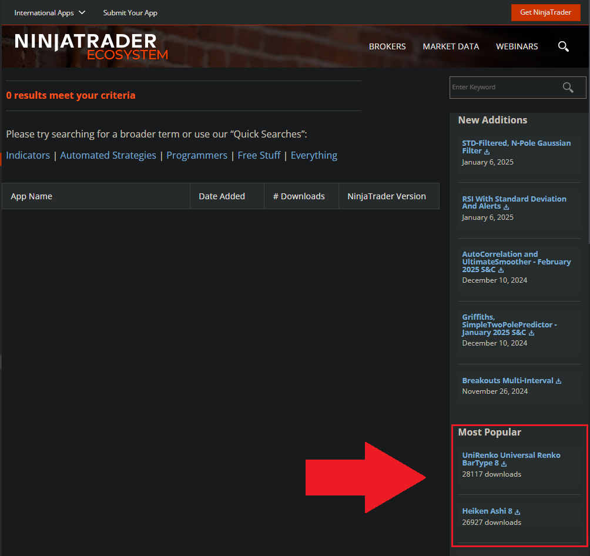
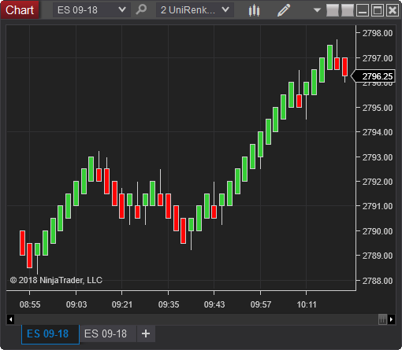
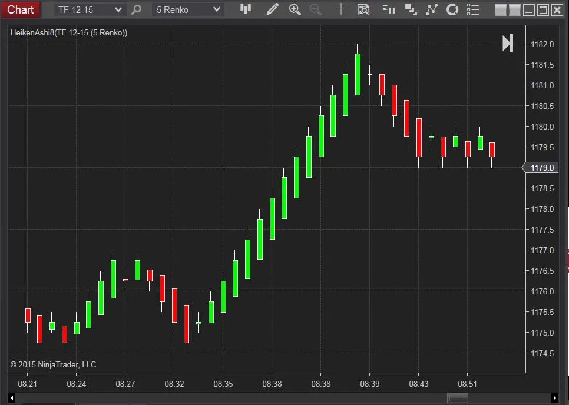

해외선물 - 닌자트레이더(NinjaTrader) 주요 애드온

한국에서는 생소할 수도 있겠지만
유니렌코 + 하이킨아시 조합의 매매시스템은 닌자트레이더에서 가장 인기있는 매매시스템이다.
사용자 앱 공유 사이트에 가보면 Most Popular에서 한 번도 내려가지 않고 상위에 랭크하고 있다.

(https://ninjatraderecosystem.com/user-app-share-results/)
애드온의 설치는
도구 -> 불러오기 -> 닌자스크립트 애드온에서 아래에서 다운받은 ZIP 파일을 선택해주면 된다.
차트를 유니렌코 바(Bar) 타입으로 하고 하이킨아시 지표(Ctrl+I)를 추가하면 끝.
나머지는 각자 입맛에 맞게 설정하면 된다.
유니렌코 (UniRenko Universal Renko BarType 8)

https://ninjatraderecosystem.com/user-app-share-download/unirenko-universal-renko-bartype-8/
설정은 유튜브 동영상 참조
https://www.youtube.com/live/z9qXPAvDZLY?si=dth5c-ce4nxVDO9H
하이킨아시 캔들 (Heiken Ashi 8)

https://ninjatraderecosystem.com/user-app-share-download/heiken-ashi-8/